What if love had infrastructure?
How Do We Love started as an open-ended provocation in my MDI capstone: if love built the world, what would we actually build? That question turned into Cupid on Earth (C.O.E.) — a public program that reframes Cupid from a matchmaker into the agency responsible for the upkeep of relational infrastructure across Wisconsin, by 2046.
Cupid on Earth isn't a dating app. It's civic infrastructure — kitchens, transit, healthcare, grief spaces, repair cafés, water stewardship — all designed around a single belief: love isn't just a feeling, it's something a community can build, maintain, and repair.
Building the world of C.O.E.
Before any screen was designed, I built the world C.O.E. would live in — a public-agency identity that feels closer to a parks department or a transit authority than a tech startup. The mark pairs a rounded, friendly wordmark with a deep evergreen, sage, cream, dusty rose, and teal palette pulled straight from the illustrated Wisconsin settings the program serves.
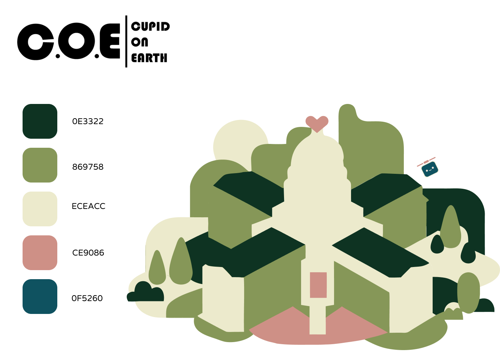
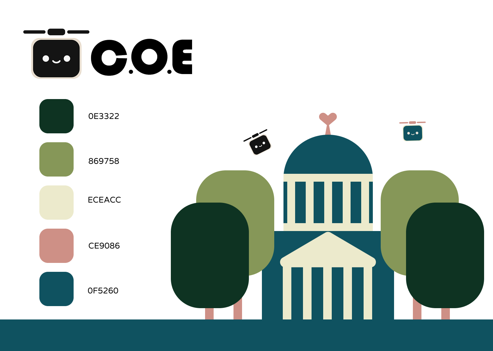
Mapping what love could mean.
Research started as a sprawling mind-map: love as translation, love across time and distance, love as civic infrastructure, love beyond the human. Sticky notes fanned out into "what if" prompts — a lexicon of love, a map of future love, a city of unsaid love — until four categories kept surfacing as the ones worth building around: primary infrastructure, care technologies, repair & restoration, and planetary love.
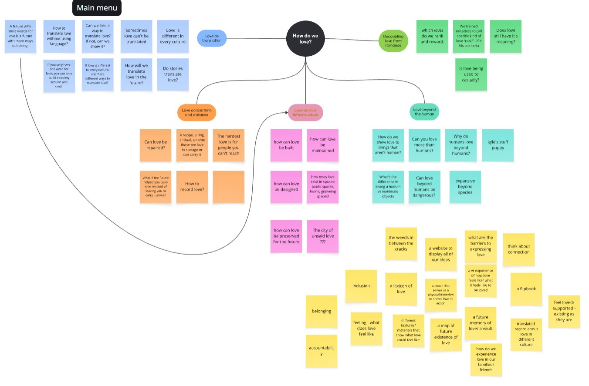
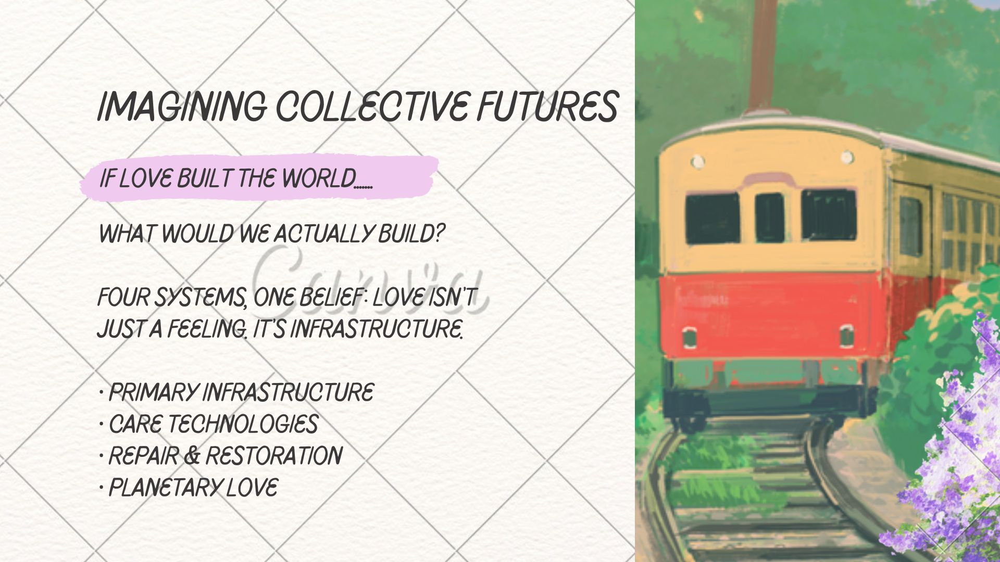
Meet Cubot, the first of many.
Cupid used to have one job: matchmaking. By 2046, Cupid looks after every kind of love — between neighbors, strangers, cities, even the planet itself. Cubot is the first of many: a small companion built to notice what people need before they ask, whether that's helping someone down the stairs, picking up trash, or keeping someone warm who's stuck out in the cold.
Cubot went through dozens of hand-drawn iterations — Ropid, Curo, Cupid 5000 — before landing on a simple metallic cube with a heart-tipped propeller, designed to feel like a gentle utility object rather than a mascot.
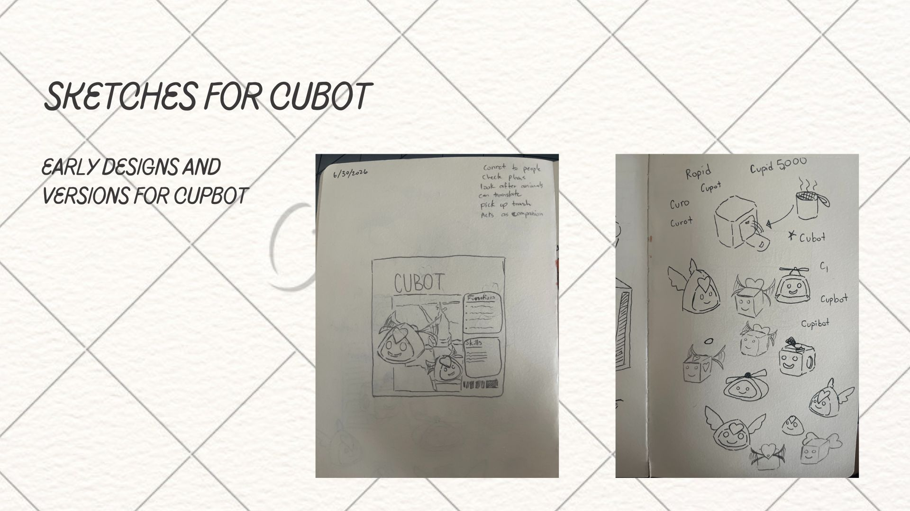
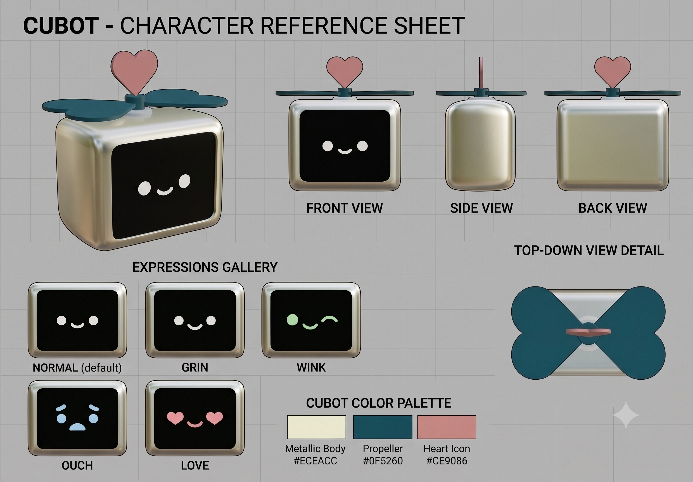
Structuring the experience.
With the world and its companion defined, I moved into low-fidelity wireframes to lock the site's structure before touching visual design — a scrolling home page introducing the four systems, and dedicated system pages built around alternating image-and-text rows.
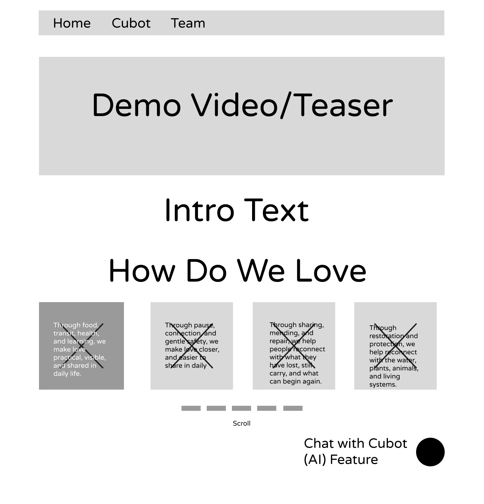
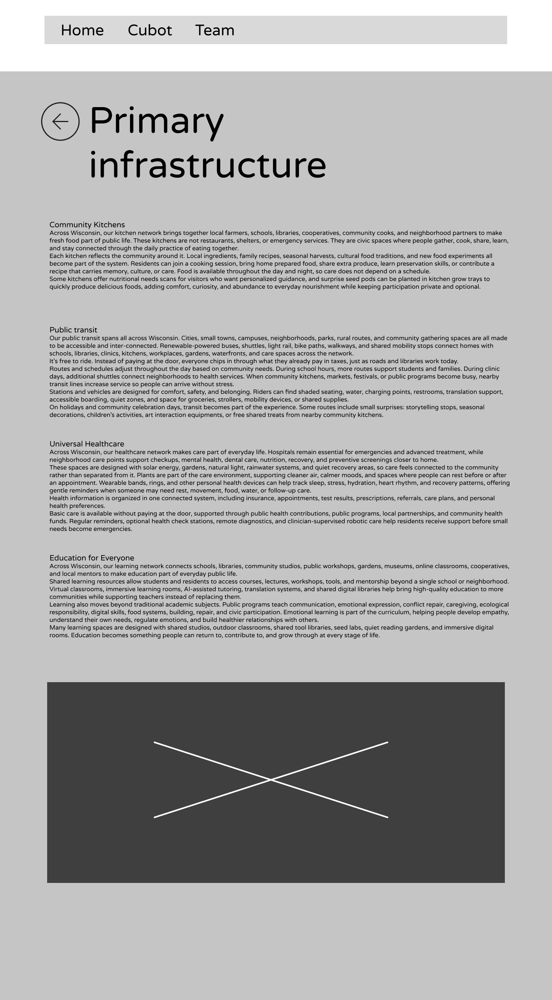
Four systems, one belief.
Love isn't just a feeling — it's infrastructure. Each of the four systems got its own page: Primary Infrastructure covers food, transit, health, and learning; Care Technologies covers pause, connection, and gentle safety; Repair & Restoration covers sharing, mending, and repair; Planetary Love covers restoration and protection of water, plants, animals, and living systems.


From speculative fiction to a working prototype.
The capstone came together as a fully clickable Figma prototype spanning all four systems and the Cubot character page — presented as a piece of speculative fiction grounded in real, buildable civic ideas, and stress-tested across desktop, laptop, and mobile framing.
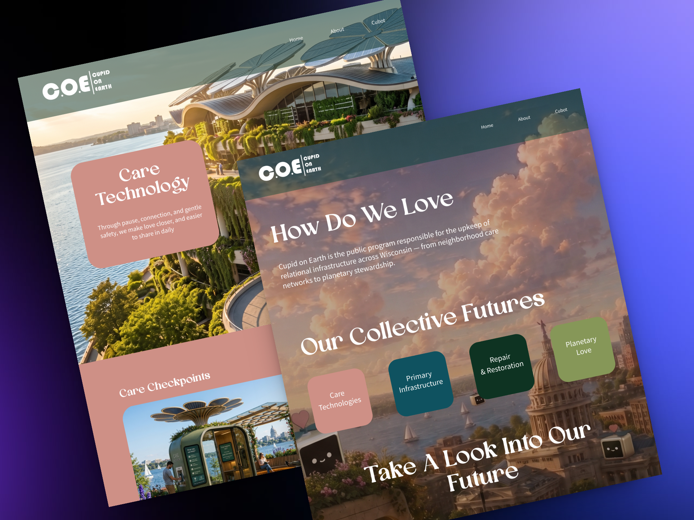
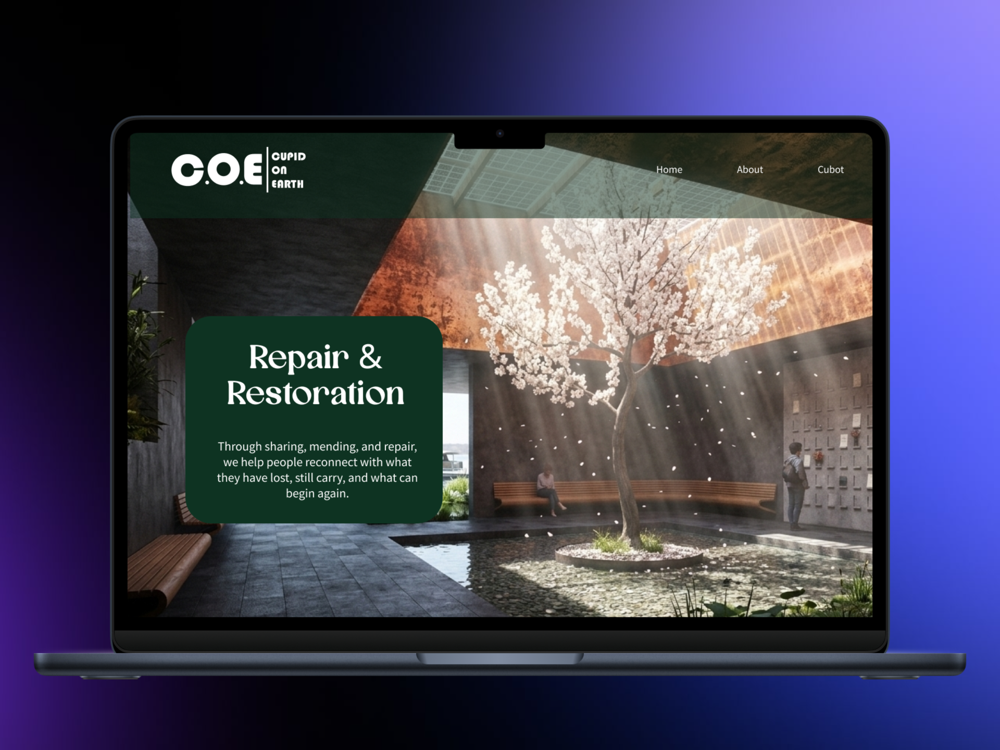
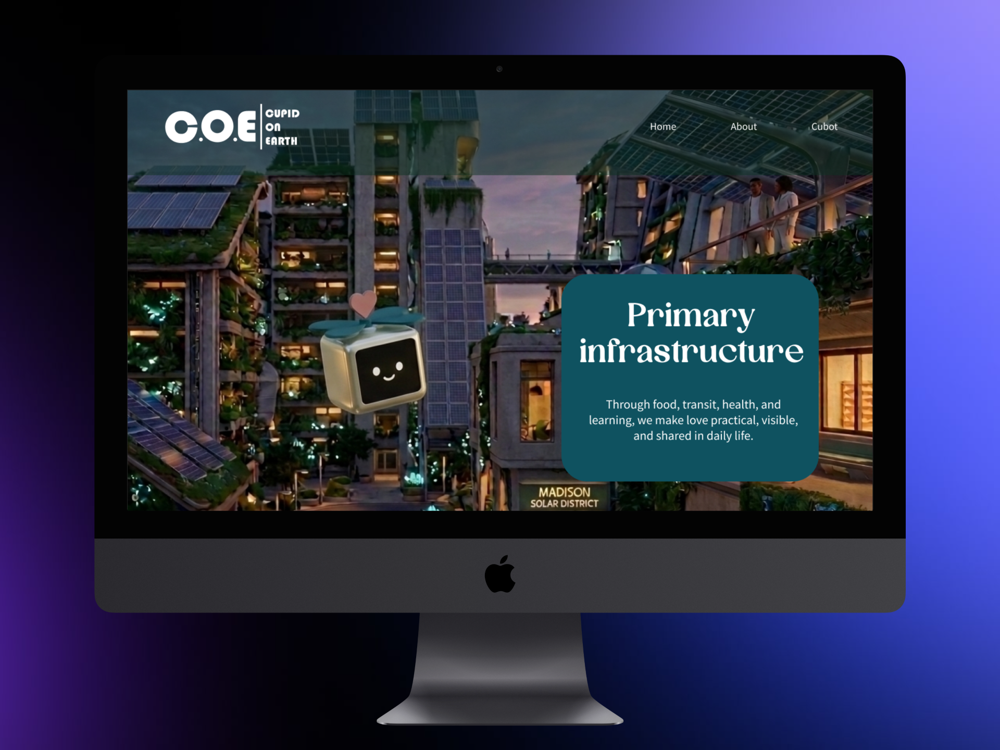